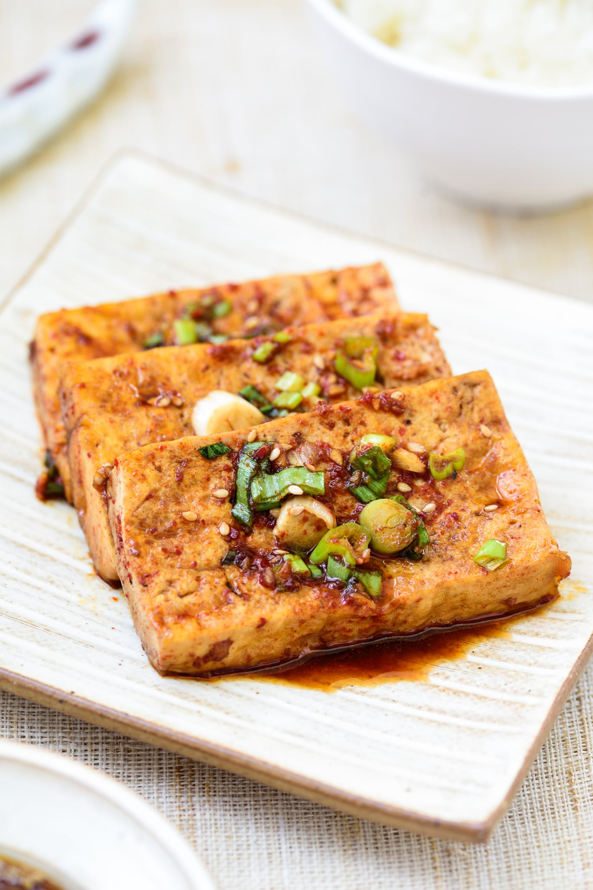

Korean Braised Tofu

Description
Korean braised tofu is a staple dish made using medium-firm tofu, soy sauce and gochugaru (Korean red pepper powder)
The picture depicts tofu in rectangles. I like cubes but don't have the time to take pictures of my own cubes. Sue me.
Ingredients
- Medium Firm Tofu (~500g)
- Neutral Cooking Oil
- 3 Tablespoons Soy Sauce
- 3 Tablespoons Water
- 1 Tablespoons Sesame Oil
- 1 Teaspoon Sugar
- 1 Teaspoon Gochugaru
- 1 Teaspoon Seasme seeds
- 1 Teaspoon of Minced Garlic
- 2 Green Onions
Steps
- Cut block of tofu into half-inch cubes. Put in collander or bowl lined with dry paper towels. Let dry while preparing sauce.
- Coat pan in oil generously and heat to medium-high
- Mix all other ingredients together in small mixing bowl.
- Once pan is hot, pour tofu in. Brown tofu for 5-10 minutes until even brown crust forms
- Turn heat to low and gently pour in sauce. Flip tofu regularly to coat evenly in sauce.
- Once excess liquid has boiled off, turn off heat, plate, and serve